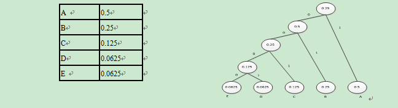
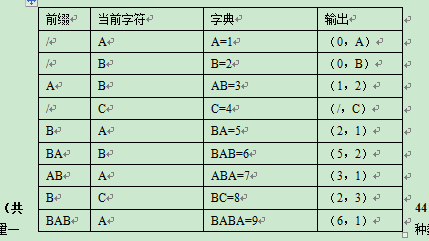
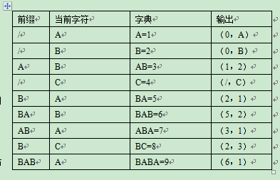

《多媒体技术及应用》模拟卷A答案
一．多项选择题（每题2分，共20分，少选给1分，错选、多选均不给分）
1． 多媒体信息传输对网络性能的要求主要包括哪几方面：（ ） ABCD
A．延时抖动 B．错误率 C．传输延时 D．吞吐量
2． CD-ROM是由（ ）标准定义的。 A
A．黄皮书 B．绿皮书 C．红皮书 D．白皮书
3． 一般说来，要求图像的质量越高，则（ ）。 D
A．图像分辨率越高，像素深度越高 B．像素分辨率越高，颜色深度越高
C．显示分辨率越高，位深度越低 D．图像精度越高，颜色深度越高
4． 下面属于音频编解码的标准是：（ ） AB
A．G.711 B．G.722 C．T.120 D．H.261
5． 以下属于多媒体静态图像文件格式的是（ ）。 ACD
A．JPG B．MPG C．BMP D．PCX
6． 以下说法属于多媒体计算机常用的图像输入设备是（ ）。 AD
A．扫描仪 B．视频信号数字化仪 C．摄像机 D．数码照相机
7． 下列数字视频中哪个质量最好（ ）。 C
A．240×180分辨率、24位真彩色、15帧/秒的帧率。
B．320×240分辨率、30位真彩色、25帧/秒的帧率。
C．320×240分辨率、30位真彩色、30帧/秒的帧率。
D．640×480分辨率、16位真彩色、15帧/秒的帧率。
8． 在数字音频信息获取与处理过程中，下述顺序哪个是正确的（ ）。 C
A． A/D变换，采样，压缩，存储，解压缩，D/A变换
B．采样，压缩，A/D变换，存储，解压缩，D/A变换
C．采样，A/D变换，压缩，存储，解压缩，D/A变换
D．采样，D/A变换，压缩，存储，解压缩，A/D变换
9． 在我国，汽车的车轮有四个，方向盘在前排的左座前，换档的装置在座位的右侧，这种规律性的结构称为（ ） B
A．结构冗余 B．知识冗余 C．视觉冗余 D．空间冗余
10． 媒体是信息表示和传播的载体，指的是用于分发信息和展现信息的手段、方法、工具、设备或装置。可以将媒体分为感觉媒体、表示媒体、存储媒体、展现媒体和传输媒体，其中计算机的输入设备，如键盘、扫描仪和输出设备，如显示器、打印机等属于（ ）。 D
A．感觉媒体 B．存储媒体
C．表示媒体 D．展现媒体
11． 多媒体同步有四种类型，其中，强调表现与交互的属于________ ,强调人为定义媒体对象间的同步关系属于____________？ A
（1）应用同步 （2）合成同步
（3）现场同步 （4）系统同步
A．(1)+(2) B．(1)+(4)
C．(2)+(3) D．(2)+(4)
12． 在有些图像的纹理区，图像的像素值存在着明显的分布模式。例如，方格状的地板图案等,可以通过某一过程生成图像，这种冗余称为 （ ）。 B
A．知识冗余 B．结构冗余 C．视觉冗余 D．空间冗余
二．简答题：（共12分，每题4分）
1. 什么是多媒体技术？
答：采用计算机技术把文本、声音、图形、图像和动画、视频等多媒体综合一体化，使之建立起逻辑连接，并能对它们进行获取、压缩编码、编辑、处理、存储、传输和展示。即多媒体技术就是把声、文、图、像和计算机集成在一起的技术。
2. 多媒体的关键特性包括哪些方面？
答：多样化、集成性、交互性、实时性。
3. 简述WAV文件和MIDI文件的区别。
答：WAV文件记录的是声音的波形，要求较大的数据空间；MIDI文件记录的是一系列的指令，文件紧凑占用空间小，预先装载比WAV容易，设计播放所需音频的灵活性较大。WAV文件可编辑性好于MIDI，音质饱满。
WAV文件适合于：
(1) 计算机资源足够处理数字文件。
(2) 有语言会话的需要。
(3) 对回放设备没有特定要求。
MIDI文件适合于：
(1) 没有足够的RAM、硬盘空间或CPU处理能力
(2) 具备符合要求的回放设备
(3) 具有高质量的声源
(4) 没有语言对话的需要
三． 计算题（共20分）
1. 对信源：X：{x1:0.40，x2:0.25，x3:0.10，x4:0.15，x5:0.10 }分别进行Huffuman编码，并计算平均码长。（10分）
平均码长： 0.1*3+0.1*3+0.15*2+0.25*2+0.4*2=2.3
2. 假设信源符号为{A, B, C, D}，这些符号的概率分别为{ 0.1, 0.4, 0.2, 0.3 }，如果消息序列的输入为：CADB，对其进行算术编码。（12分）
A B C D
0,0.1 0.1,0.5 0.5,0.7 0.7,1
按以上规则，对CADB进行算术编码。(12分)
(1) 在第一个字符 C 被编码时 ,C 的 rangelow＝0.5,rangehigh=0.7, 因此 :
low＝0 + 1 × 0.5 ＝0.5
high=0 + 1 × 0.7 ＝0.7
range=high－low=1－0.4=0.6
此时分配给 1 的范围为 [0.5,0.7] 。
(2)第二个字符 A 编码时使用新生成范围 [0,0.1], A 的 rangelow=0, rangehigh=0.1, 因此：
low=0.5 十 0.2 × 0=0.5
high=0.5 ＋0.2 × 0.1=0.52
range=0.02
范围变成 [0.5,0.52] 。
(3) 对下一个字符D 编号,1 的 rangelow=0.7,rangehigh=1, 则：
low=0.5 ＋ 0.7 × 0.02=0.514
high=0.5 ＋ 0.02 × 1=0.52
(4) 对下一个字符B编号,B 的 rangelow=0.1,rangehigh=0.5 则：
low=0.496 ＋ 0.006 × 0.1=0.4966
high=0.496 ＋ 0.006 × 0..5=0.499
即用 [0.4966,0.499] 中的任意一个数字都可以表示数据串CADB。
四．问答题（共44分）
1. 多媒体数据库基于内容检索的特点是什么？（8分）
必须从媒体内容中提取信息线索：力图突破传统的基于关键字检索的局限，直接对图像、视频、音频进行分析、抽取特征，使得检索更加接近媒体对象。
提取特征的方法多种多样：以图像的特征为例，可以提取形状特征，颜色特征，纹理特征，轮廓特征等。
检索过程人机交互进行：一般来说，人对于特征比较敏感，能迅速分辨出目标的轮廓、音乐的旋律等。但是，对于大量的对象，一方面难以记住这些特征，另一方面人工地从大量的数据中查找目标效率较低。
基于内容的检索是一种近似的匹配：一般来说，在检索的过程中，采用逐步求精的办法，每一层的中间结果是一个集合，不断减少集合的范围，知道定位目标，这一点与数据库检索的精确匹配算法有明显的不同。
2. 算术编码的特点是什么？（8分）
不必预先定义概率模型 , 自适应模式具有独特的优点;信源符号概率接近时 , 建议使用算术编码 , 这种情况下其效率高于 Huffman 编码;
算术编码绕过了用一个特定的代码替代一个输入符号的想法 , 用一个浮点输出数值代替一个流的输入符号 , 较长的复杂的消息输出的数值中就需要更多的位数。
算术编码实现方法复杂一些 , 但 JPEG 成员对多幅图像的测试结果表明 , 算术编码比Huffman 编码提高了 5% 左右的效率 , 因此在 JPEG 扩展系统中用算术编码取代 Huffman 编码。
3. 扫描仪的工作原理。（8分）
答：扫描仪中最关键的设备：CCD阵列，是固定的光电管按照固定的方式排列而成。 CCD （change-coupled device ），电荷耦合器件，是扫描仪的光传感器。
工作原理：它可以将照射在其上的光信号转换为相应的电信号；扫描仪在工作时，首先由光源将光线照在图稿上，产生表示图像特征的投射光和反射光，图像不同，光的模式不同。光学系统采集这些光线将其聚焦在CCD上，由CCD将光信号转换成相应电信号然后对这些信号进行A/D转换及处理，产生相应的数字信号送往计算机； 当机械转动机构在控制电路的控制下带动装有光学系统和CCD的扫描头与图稿进行相对运动时，就将图稿全部扫描一遍，一幅完整的图像就输入到计算机中了。
4. 简述立体视频的工作原理。(10分)
答：由于人两眼距离产生视差，产生左眼一幅图右眼一副立体图像对，图像相互交叠。视差是投影到人眼视网膜上的图像上两点之间的水平距离，正是这个距离产生了视觉的立体感。这就要求系统能够快速地产生出两眼不同的图像，通过立体图像合成算法产生立体图像。利用显示器显示图像时如果把两眼不同视差的快速显示在显示器上，并且每次只让一幅图进入一只眼睛，两眼交替进行，也会使人产生立体视觉。通过特殊的设备投射到两眼之中。采用立体眼镜等特殊设备为两眼显示不同的图像。
5. 简述MPEG和JPEG的主要差别？。（10分）
答：MPEG视频压缩技术是针对运动图像的数据压缩技术。为了提高压缩比，帧内图像数据和帧间图像数据压缩技术必须同时使用。MPEG通过帧运动补偿有效地压缩了数据的比特数，而MPEG采用了三种图像，帧内图、预测图和双向预测图。有效地减少了冗余信息。对于MPEG来说，帧间数据压缩、运动补偿和双向预测，这是和JPEG主要不同的地方。而JPEG和MPEG相同的地方均采用了DCT帧内图像数据压缩编码。
《多媒体技术及应用》模拟卷B答案
一．多项选择题（每题2分，共20分，少选给1分，错选、多选均不给分）
1． 以下属于基于内容检索的特征是（ ）。 AD
A．从媒体内容中提取信息线索 B．精确性检索
C．特征抽取的方法比较固定 D．检索过程是个人机交互的过程
2． 多媒体的关键特性主要包括信息载体的多样化、交互性和（ ） 。 D
A．活动性 B．可视性 C．规范化 D．集成性
3． 多媒体计算机系统中，内存和光盘属于（ ） 。 D
A．感觉媒体 B．传输媒体 C．表现媒体 D．存储媒体
4． 所谓媒体是指 （ ） 。 A
A． 表示和传播信息的载体 B．各种信息的编码
C． 计算机输入与输出的信息 D．计算机屏幕显示的信息
5． 目前多媒体计算机中对动态图像数据压缩常采用（ ） 。 C
A．JPEG B．GIF C．MPEG D．BMP
6． 多媒体技术发展的基础是（ ）。 A
A、数字化技术和计算机技术的结合 B．数据库与操作系统的结合
C．CPU的发展 D．通信技术的发展
7． 多媒体PC是指（ ）。 C
A．能处理声音的计算机 B．能处理图像的计算机
C．能进行文本、声音、图像等多种媒体处理的计算机 D．能进行通信处理的计算机
8． 超文本技术提供了另一种对多媒体对象的管理形式，它是一种（ ）的信息组织形式。 A
A．非线性 B．抽象性 C．线性 D．曲线性
9． 多媒体计算机中的媒体信息是指 （ ） 。 D
A．数字、文字 B．声音、图形 C．动画、视频 D．上述所有信息
10．计算机中显示器显示设备是根据是 （） 三色原理生成的。 C
A．RVG（红黄绿） B．WRG（白红绿）
C．RGB（红绿蓝） D．CMY（青品红黄）
11． 多媒体技术未来的发展方向是（ ）。 D
A．高分辩率、高速度化 B．简单化，便于操作
C．智能化，提高信息识别能力 D．以上全部
12．彩色打印机生成的各种颜色是用（ ） 三色相减模型组成。 D
A．RVG（红黄绿） B．WRG（白红绿）
C．RGB（红绿蓝） D．CMY（青品红黄）
二．简答题：（共12分，每题4分）
1. 简述位图与矢量图的区别。
2. 简述FM合成与波表合成的区别。
答：FM合成方式是由波形的组合而产生的。它是使高频振荡波的频率按调制信号规律变化的一种调制方式。采用不同调制波频率和调制指数，就可以方便的合成具有不同频谱分布的波形，再现某些乐器的音色。而且可以创造出丰富多彩，真实乐器不具备的音色。理论上有无限多组的波形，可以模拟任何的声音，但实际上使用最多的也只有四个正弦波产生器来模拟音色。所以FM合成在发出General MIDI中的乐器声时，其真实效果较差。波表合成相对比较直观。音乐家在真实乐器上演奏不同的音符，选择44.1 kHz的采样频率、16位的乐音样本，这相当于CD-DA的质量，把不同音符的真实声音记录下来，这就完成了乐音样本的采集。ROM是超大规模集成电路(very large scale integrated，VLSI)芯片。
3. 自适应差分脉冲编码调制（ADPCM）的两个基本思想是什么？
答：两个核心思想是：一是利用自适应的思想改变量化增量的大小，即使用小的量化增量去编码小的差值，使用大的量化增量去编码大的差值；二是使用过去的样本值估算下一个输入样本的预测值，使实际样本值和预测样本值之间的差值总是最小。
计算题（共22分）
1. 现有5个待编码的符号A~E，它们的概率如表所示。
（1）使用霍夫曼编码算法求出这5个符号的所分配的代码、信息熵及平均码长。（8分）
（2）说明霍夫曼编码算法在何时效率最高？何时效率最低？（2分）

A 0.5
B 0.25
C 0.125
D 0.0625
E 0.0625
编码为：A: 1; B:01; C:001; D:0001; E:0000
平均码长为： 1×0.5+2×0.25+3×0.125+4×0.0625+4×0.0625=1.875
（2）代码出现概率相当时霍夫曼编码效率最低，概率呈2的负幂次方时编码效率最高。
对信元ABABCBABA B A B C B AB A进行LZ77编码。（10分）
答：(0,0)A,(0,0)B,(2,2)C,(4,3)A,(4,3)C,(6,4)/
四．问答题（共44分）
1. 多媒体数据具有哪些主要的特点，这些特点对多媒体数据库提出了哪些要求？（10分）
答：多媒体数据具有的特点有：（1）数据量：与常规相比较数据量巨大；（2）数据长度：无法预先估计；（3）数据模型：复杂，具有层次结构；（4）数据定义及操作：传统的数据库不能满足多媒体数据的需要；（5）数据传送：多媒体数据无论是声音还是视频媒体，都要求连续传送或输出，否则将导致严重的失真。
因此对多媒体数据库提出的要求有（功能）：（1）支持图形、图像、动画、声音、动态视频等做媒体字段类型及用户自定义类型。（2）支持定长数据和非定长数据的集成管理；（3）支持复杂实体的表示和处理；（4）支持同一实体的多种表现形式；（5）具有良好的用户界面；（6）支持多媒体的特殊查询机良好的处理接口；（7）支持分布式环境。
2. 分布式多媒体计算机系统具备哪些基本特征？（6分）
答：（1）多媒体综合性；（2）资源分散性：（3）运行实时性：（4）操作交互性：（5）系统透明性。
3. 声音的三维化处理所基于的原理是什么？双工理论的作用在何时体现得较为明显、何时又会失效？耳廓模型的建立是为了达到什么样的目标？（10分）
答：声音的三维化处理基于的原理是双工理论。人耳对声音定位的特性，通过大脑的综合作用后，对有差别的声音信号进行了相对于空间位置的定位。很显然，如果按此方法使用计算机向人耳提供不同的声音，人的大脑也会综合出声音的位置信息。
双工理论过于简单，这一理论实际上是处于一个较理想的状态下，即无反射、无折射和单频率等，但实际上人耳所处的环境比双工理论描述的环境要复杂得多。按照双工理论，人耳应没有在垂直平面的定位能力，不能够区分前后，因为在这些情况下两耳间声音的到达时间差ITD和两耳间声音的强度差IID都几乎为零；而实际上，人耳确实具有这方面的能力，这就是耳廓的作用。
耳廓模型的建立，主要为了模拟出人耳的听觉特性，具体来讲，就是模拟如何解析声源的本身信号特征、声源的空间三维位置、声源所处的环境这3个因素。建立正确的耳廓模型有利于创造三维的虚拟听觉空间。
4. 以多媒体毕业光盘为例，描述多媒体作品创作的主要步骤。（8分）
答：（1）需求分析；（2）应用系统结构设计(初步设计)；（3）建立设计标准和细则(详细设计)；（4）准备多媒体数据；（5） 制作生成多媒体应用系统(编码与集成)；（6）系统的测试与应用。
5. 试举一两项近年来出现的多媒体新技术和应用，谈谈你对这些技术的认识、看法以及它们的应用前景。（10分）
略
《多媒体技术及应用》模拟卷C答案
考试形式：闭卷 考试时间：90分钟
一．多项选择题（每题2分，共20分，少选给1分，错选、多选均不给分）
1． 在（ ) 时，需要使用MIDI。 AB
A．没有足够的硬盘存储波形文件 B．用音乐作背景效果
C．采样量化位数 D．压缩方式
2． 以下（ ）不是常用的声音文件格式。 A
A．JPEG文件 B．WAV文件 C．MIDI文件 D．VOC文件
3． 下面（ ）不是图像和视频编码的国际标准。 C
A．JPEG B．MPEG-1 C．ADPCM D．MPEG-2
4． 图像序列中的两幅相邻图像，后一幅图像与前一幅图像之间有较大的相关，这是 （ ）。 B
A．视觉冗余 B．时间冗余 C．信息熵冗余 D．空间冗余
5． DVD动态图像标准是指 （） 。 D
A．MPEG-1 B．JPEG C．MPEG-4 D．MPEG-2
6． 把普通PC变成MPC要解决的关键技术是（ ）。 D
A．视频音频信号的获取技术和输出技术
B．多媒体数据压缩编码和解码技术
C．视频音频的实时处理和特技
D．以上全部
7． 多媒体数据具有（ ）特点。 D
A．数据量大和数据类型多
B．数据类型间区别大和数据类型少
C．数据量大、数据类型多、数据类型间区别小、输入和输出不复杂。
D．数据量大、数据类型多、数据类型间区别大、输入和输出复杂。
8． 以下（ ）不是超文本的三个基本要素。 D
A．节点 B．链 C．网络 D．多媒体信息
9． 下列关于dpi的叙述（ ）是正确的。 C
（1）每英寸的bit数 （2）每英寸像素点
（3）dpi越高图像质量越低 （4）描述分辨率的单位
A．（1），（3） B．（1），（4） C．（2），（4） D．全部
10． 多媒体个人电脑的英文缩写是 （） 。 D
A．VCD B．APC C．DVD D．MPC
11． 扫描仪可扫描 （ ） 。 A
A．黑白和彩色图片 B．黑白图片 C．彩色图片 D．位图文件形成图片
12． 颜色的三要素包括 （ ） 。 A
A．亮度、色调、饱和度 B．亮度、色调、分辩率
C．色调、饱和度、分辩率 D．亮度、饱和度、分辩率
二．简答题：（共12分，每题4分）
1. 自适应脉冲编码调制（APCM）的基本思想是什么？
答：基本思想是根据输入信号幅度的均方根值的变化来改变量化增量的一种编码技术。这种自适应可以是瞬时自适应，即量化增量每隔几个样本就改变，也可以是非瞬时自适应，即在较长的时间内保持不变。
2. 差分脉冲编码调制（DPCM）的基本思想是什么？
答：基本思想根据过去的样本区评估下一个样本信号的幅度大小，这个值称为预测值，然后对实际信号值与预测值之差进行量化编码，从而减少了表示每个样本信号的位数。
3. 什么叫做均匀量化？什么叫做非均匀量化？
答：均匀量化是采用相同间隔对采样得到的信号做量化，也成为线性量化。非均匀量化是对输入信号进行量化时，大的输入信号采用大的量化间隔，小的输入信号采用小的量化间隔。
三． 计算题（共22分）
1. 假设信源符号为{0,1}，符号的概率分别为{ 0.4, 0.6 }，根据这些概率可把间隔[0, 1]分成2个子间隔：[0, 0.4], [0.4, 0.6]，其中[x,y]表示半开放间隔，即包含x不包含y，如下表所示。
符号 0 1
概率 0.4 0.6
初始编码间隔 [0,0.4] [0.4, 1]
按以上规则，对1010进行算术编码。(12分)
(1) 在第一个字符 1 被编码时 ,e 的 rangelow＝0.4,rangehigh=1, 因此 :
low＝0 + 1 × 0.4 ＝ 0.4
high=0 + 1 × 1 ＝1
range=high－low=1－0.4=0.6
此时分配给 1 的范围为 [0.4,1] 。
(2)第二个字符 0 编码时使用新生成范围 [0.4,1],0 的 rangelow=0, rangehigh=0.4, 因此：
low=0.4 十 0.6 × 0=0.4
high=0.4 ＋0.6 × 0.4=0.64
range=0.24
范围变成 [0.4,0.64] 。
(3) 对下一个字符1 编号,1 的 rangelow=0.4,rangehigh=0.24, 则：
low=0.4 ＋ 0.24 × 0.4 =0.496
high=0.4 ＋ 0.24 × 1=0.64
(4) 对下一个字符0 编号,0 的 rangelow=0,rangehigh=0.4, 则：
low=0.496 ＋ 0.144 × 0=0.496
high=0.496 ＋ 0.144 × 0.4=0.553
即用 [0.496,0.553] 中的任意一个数字都可以表示数据串1010。
（2）代码出现概率相当时霍夫曼编码效率最低，概率呈2的负幂次方时编码效率最高。
2. 对信源ABABCBABABABCBABA进行LZ78编码。（10分）

四．问答题（共44分）
1. 如何衡量一种数据压缩方法的好坏？多媒体数据存在哪些类型的冗余？
答：评价一种数据压缩技术的性能好坏主要有3个关键的指标：压缩比、图像质量、压缩和解压的速度。希望压缩比要大，即压缩前后所需的信息存储量之比要大；恢复效果要好，尽可能地恢复原始数据；实现压缩的算法要简单，压缩、解压速度快，尽可能地做到实时压缩解压。除此之外还要考虑压缩算法所需要的软件和硬件。
一般而言，多媒体数据中存在的数据冗余类型主要有以下几种。
（1）空间冗余
在同一幅图像中，规则物体和规则背景的表面物理特性具有相关性，这些相关性的光成像结果在数字化图像中就表现为数据冗余。
（2）时间冗余
时间冗余反映在图像序列中就是相邻帧图像之间有较大的相关性，一帧图像中的某物体或场景可以由其他帧图像中的物体或场景重构出来。音频的前后样值之间也同样有时间冗余。
（3）信息熵冗余
信源编码时，当分配给第i个码元类的比特数b(yi)= .lgpi时，才能使编码后单位数据量等于其信源熵，即达到其压缩极限。但实际中各码元类的先验概率很难预知，比特分配不能达到最佳。实际单位数据量d>H(S)，即存在信息冗余熵。
（4）视觉冗余
人眼对于图像场的注意是非均匀的，人眼并不能察觉图像场的所有变化。事实上人类视觉的一般分辨能力为26灰度等级，而一般图像的量化采用的是28灰度等级，即存在着视觉冗余。
（5）听觉冗余
人耳对不同频率的声音的敏感性是不同的，并不能察觉所有频率的变化，对某些频率不必特别关注，因此存在听觉冗余。
（6）其他冗余
包括结构冗余、知识冗余等。
2. 简单描述JPEG压缩算法的基本流程。
答： JPEG压缩是有损压缩，它利用了人的视角系统的特性，使用量化和无损压缩编码相结合来去掉视角的冗余信息和数据本身的冗余信息。压缩编码大致分成三个步骤：
（1）使用正向离散余弦变换(forward discrete cosine transform，FDCT)把空间域表示的图变换成频率域表示的图。
（2）使用加权函数对DCT系数进行量化，这个加权函数对于人的视觉系统是最佳的。
（3）使用哈夫曼可变字长编码器对量化系数进行编码。
3. 简述光存储的原理。（10分）
答：是通过光学的方法读写数据的一种存储技术，其工作原理是:
改变一个存储单元的性质 , 使其性质的变化反映出被存储的数据 , 识别这种性质的变化 , 就可以读出存储数据。
光存储单元的性质 , 例如反射率、反射光极化方向等均可以改变 , 它们对应于存储二进制数据 0( 不变 ) 、 1( 改变) , 光电检测器能够通过检测出光强和光极性的变化来识别信息。
高能量激光束可以聚焦成约1 μm 的光斑 , 因此光存储技术比其他存储技术具有更高的容量。
4. 试述多媒体应用设计过程及应注意的问题。
答：多媒体应用设计包括选题、脚本设计、创意设计、人机界面设计等过程。
选题首先从分析用户的需求开始，在充分考虑以下问题的基础上，如应用系统的用户有哪些？应用场合和应用环境是什么？该系统题材类型是科技、教育、娱乐还是商业用？系统主要内容有哪些？要传递哪些信息？解决什么问题？……可以确定项目的对象、多媒体信息的种类、表现手法，以及要达到的目标，完成应用的选题。
脚本不仅要规划出各项内容显示的顺序和步骤，还要描述其间的分支路径和衔接的流程，以及每一步骤的详细内容。脚本设计必须兼顾诸多方面，包括系统的完整性和连贯性。设计中既要考虑整体结构，又要善于运用声、光、画、影物多重组合达到最佳效果，注意系统的交互性和目标性。特别要注意根据不同的应用系统运用相关的领域知识和指导理论。在脚本设计中要注意媒体的选择和脚本内容顺序及控制路径的设计。
创意设计首先是对屏幕进行设计，确定各种媒体的排放位置、相互关系，各种按钮的名称、排放方法、以及各类能引起系统动作的元素的位置、激活方式等。在时间安排上也要充分安排好。其次是设计交互过程，要充分发挥计算机交互的特点。创意的好坏取决于对内容的深刻理解以及创意人员的水平，也取决于软件系统的性能，它决定了最终应用的质量高低。在创意设计中，要对屏幕设计和交互设计中的背景、标题、描述（文字、图形、动画）、各种控件（按钮、热字和热键）等空间组成，以及背景、音乐、解说词和动作出现的时间序列勾画出多种草图或场景、反复对比，择优选择确定。
人机界面设计首先应进行界面设计分析，即收集有关用户及其应用环境信息之后，进行用户特性分析，用户任务分析，记录用户有关系统的概念、术语等。其次，进行任务设计。设计应分别给出人与计算机的活动，使设计者较好地理解在设计界面时所遇到的问题，形成系统操作手册、训练文件和用户指南的基础。在考虑用户工作方式及系统环境和支持等因素下，进行任务设计。第三，进行界面设计。选择界面设计类型时要全面考虑。一方面要从用户状况出发，决定对话应提供的支持级别和复杂程度，选择一个或几个适宜的界面类型；另一方面要匹配界面任务和系统需要，对交互形式进行分类。最后，将界面分析结果综合成设计决策，进行界面结构的设计与实现，包括界面电话设计、数据输入界面设计、屏幕显示设计和控制界面设计等。
5. 数码相机的工作原理。
成像：拍照时，进入照相机镜头的光线聚焦在CCD上，一个包含上万个细小彩色点的过滤器把射入的光线分离成红、绿、蓝三种成分，使得每个CCD单元只能看到一种颜色，从而在CCD芯片的表面形成一个图像。
模数转换：当照相机判定已经聚集了足够的电荷，并传送给一个模数转换器把每一个模拟电平转换成0～255之间的数值，该值对应于图像上一点的红、绿、蓝的强度，从而完成了把照射到各个光敏单元的光线按亮度转换成模拟电平的工作。
《多媒体技术及应用》模拟卷D答案
一．多项选择题（每题2分，共24分，少选给1分，错选、多选均不给分）
1． JPEG是 （ ） 图像压缩编码标准。 A
A. 静态 B. 动态 C．点阵 D．矢量
2． MPEG是数字存储（ ）图像压缩编码和伴音编码标准。 B
A. 静态 B． 动态 C．点阵 D．矢量
3． MIDI的音乐合成器有（ ）。 AB
A. FM B．波表 C．复音 D．音轨
4． 用真彩色存储一幅分辨率为800×600的图像，其显存容量为（ ）。 B
A. 10.99MB B. 1.37MB C. 3.83MB D. 2.73MB
5． 多媒体数据库体系结构通常有以下哪几种：（ ） ABD
A．集中型 B．协作型 C．分布型 D．主从型
6． 在JPEG中使用了哪两种熵编码方法？（）。 D
A．统计编码和算术编码。 B．PCM编码和DPCM编码。
C．预测编码和变换编码。 D．哈夫曼编码和自适应二进制算术编码。
7． 两分钟双声道，16位采样位数，22.05KHz采样频率声音的不压缩的数据量是（）。 D
A．5.05MB B．10.58MB C．10.35MB D．10.09MB
8． 下列采集的波形声音哪个质量最好（ ）。 D
A． 单声道、8位量化、22.05KHz采样频率
B． .双声道、8位量化、44.1KHz采样频率
C． .单声道、16位量化、22.051KHz采样频率
D． 双声道、16位量化、44.1KHz采样频率
9． MIDI的音乐合成器有（ ）。 AB
A．FM B．波表 C．复音 D．音轨
10． 下列哪些说法正确? （ ） C
(1) 媒体之间的关系也代表着信息。 (2)任何媒体之间都可直接进行相互转换。
(3) 不同的媒体所表达信息的程度不同。 (4)有格式的数据才能表达信息的含义。
A．(1)+(2)+(3) B．(1)+(2)+(4) C．(1)+(3)+(4) D．全部
11． 位图与矢量图比较，可以看出（ ）。 AC
A．矢量图占用的空间比位图少
B．位图与矢量图占用空间相同
C．对于复杂图形，位图比矢量图画对象更快
D．对于复杂图形，位图比矢量图画对象更慢
12． 关于MIDI，下列叙述错误的是（ ）。 BC
A．MIDI是合成声音 B．MIDI的回放不依赖设备C．MIDI文件是声音波形文件 D．MIDI 音源受限
二．简答题：（共12分）
1. 什么是采样定理？答：采样定理是指要获得一个无损的采样，就必须以波形最高允许频率的两倍作为采样率。
2. 什么是真彩色和伪彩色？
答：真彩色是指在组成一幅彩色图像的每个像素值中，有R,G,B三个基色分量，每个基色分量直接决定显示设备的基色强度，这样产生的彩色称为真彩色。
伪彩色图像的含义是，每个像素的颜色不是由每个基色分量的数值直接决定，而是把像素值当作彩色查找表(color look-up table,CLUT）的表项入口地址,去查找一个显示图像时使用的R,G,B强度值，用查找出的R,G,B强度值产生的彩色称为伪彩色。
3. 多媒体软件分为几类？答：多媒体软件可以分为5类：（1）驱动程序；（2）支持多媒体的操作系统或环境；（3）多媒体数据库准备软件；（4）多媒体编辑创作软件；（5）多媒体应用软件。从层次上看多媒体软件可以分为4层：（1）用户层；（2）多媒体应用系统层：（3）多媒体驱动程序；（4）多媒体硬件。
三． 计算题（共20分）
1. 多媒体技术的关键在于解决动态图像和声音的存储和传输问题。（12分）
2. 如果要将一张 11 英寸× 8.5 英寸的彩色照片输入计算机 , 扫描仪的分辨率设定为 300 dpi( 点 / 英寸 ), 每个像素的 R、G、B 分量分别为 8 位 , 扫描产生的就是 24 位的真彩图 , 经扫描仪数字化后的图像不经压缩，需要占据多少存储空间？
答：11*8.5*90000*24/8/1024/1024=24.08MB
3. 请计算1分钟双声道、16位采样位数、22.05kHz原始频率声音的不压缩的数据量是多少？
答：60*16*2*44.1*1000/8/1024/1024=10.09MB
4. PAL 制式是欧洲和我国使用的彩色视频图像标准 , 其视频带宽为5MHz, 帧速率为 25 帧 /s, 样本宽是 24bit, 采样频率应该为多少?存储一帧数字化的 PAL 制式视频图像需要的空间为多少？存储一秒种 PAL 制式的视频图像需要的空间为多少？
答：10MHz， 10*24*1000*1000/8/1024/1024/25=1.14MB 28.6MB
5. 给定信源A、B、C的初始编码如下图，对信元ABABCBABA B A B C B AB A进行LZW编码。
答：

四．问答题（共44分）
1. 与JPEG相比，JPEG2000有哪些优点？在压缩算法上主要的不同是什么？（10分）
答：与JPEG相比，JPEG2000的优势主要表现在以下四个方面：（1）高压缩率；（2）无损压缩；（3）渐进传输；（4）感兴趣区域压缩。在压缩算法上放弃了JPEG所采用的以离散余弦变换算法为主的区块编码方式，二改用以离散小波变换算法为主的多解析编码方式。
2. 与CD光盘相比，DVD是如何提高其存储容量的？（8分）
答：减小激光波长可以增加容量是因为光学读出头的分辨率和激光的波长有关.
减小光道间距,加大数据记录区域也是提高记录容量的有效途径。DVD盘的记录区域比CD盘的增加后，记录容量可以增加1.9％。
提高DVD存储容量的另一个重要措施是使用盘片的两个面来记录数据以及在一个面上制作多个记录层。常规的CD盘片只使用一个面，并且只使用一个记录层来记录信息，而现在的DVD盘片可以在一面记录两层信息。例如，单面双层，单面双层盘片的表层称为第0层，最里层称为第一层，第0层采用一种新的半透明的涂层，可让激光束透过表面到达第一层。
DVD盘片信号的调制方式和错误校正方式也做了相应的修改以适应高密度的需要，这样可以减少DVD盘片上的冗余位，从而为用户提供更多的存储空间。此外，在CD盘上有许多错误检测码和错误校验码信息位，采用新的算法之后这些信息位的量可以减少，相当于增加了用户数据的容量。
3. MPEG-1标准中主要采用了什么技术来减少视频图像的时间和空间上的冗余？
答：MPEG-1标准中采用16×16块的运动补偿缩减时间冗余；混合使用变换编码、基于视觉加权的标准量化和行程编码技术减少空间冗余。
4. 常用的数据压缩算法有哪些？
答：常用的数据压缩算法有信息（熵）编码（主要有行程长度编码、哈弗曼编码和算术编码）、词典编码、通用编码、预测编码、模型编码、变换编码、矢量量化编码、子带编码和混合编码。
5. 什么是颜色直方图？为什么要将颜色直方图划分成子颜色直方图？
答：假设一幅图像G的颜色（或灰度）由N级组成，每一种颜色值用值用qi记录，对具有该颜色值的像素数为hi，可以得到直方图。直方图描述了一幅图像的颜色特征。（1）直方图中的值是统计而来的，描述了该图像关于颜色的数量特征，可以反映图像的部分内容。（2）直方图丢失了颜色的位置特征。（3）如果将图像划分成若干子区域，所有子区域的直方图之和等于全图直方图。